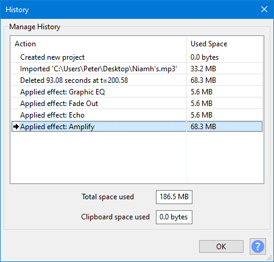

History - Undo and Redo
- Undo/Redo is fast, irrespective of how long the original action took. Use it to listen easily to "before" and "after" versions of your work.
- As you apply more actions, the disk space needed to allow Undo/Redo of those actions grows.
- The Undo/Redo space usage is discarded on closing the project.
- Undo/Redo steps for an open project can be managed in the History window.
- Saving or exporting
- Changing the track height or the selection or cursor position (these are saved when you save a change that is recorded by Undo/Redo)
- Changing preferences settings.
Contents
History
The History dialog lets you view and manage all of the actions you have taken since you opened a project.
Accessed by the History dialog window can be resized by clicking and dragging on its borders.
- 
- History dialog at larger non-default size
Manage History
The History list has two columns:
- "Action" shows a list of all project states that you can go back or forward to, earliest state first.
- "Used Space" shows for each action in the list the amount of disk space that that action used.
Space Used
- Total space used: Displays the total disk space currently used by the project, which is the total of all the "Used Space" values shown in the History list.
- Clipboard space used: This indicates the amount of disk space currently used by the Audacity Clipboard.
Buttons
- button: Accepts the changes made in the History window, if any, and closes the window.
-
 help button, brings you to the appropriate page in the Manual, this page.
help button, brings you to the appropriate page in the Manual, this page.
Rolling back/forward - multiple Undos/Redos
Select an item in the History list, and click the button, to Undo or Redo immediately to that action.
It is the same as choosing or multiple times, but much quicker.

- The actions show grayed out will become Undone and the non-grayed out actions will remain.
- The displayed waveforms will change with the selection to show the effect of the change.
- The grayed-out items will remain available for a potential Redo until you perform a new action on the project.
Undo and Redo
There are four ways to Undo or Redo.
- The Undo and Redo choices at the top of Edit Menu
- Two buttons in the Edit Toolbar:
 Undo and
Undo and  Redo
Redo - Select "History..." from the View Menu and click on an action to jump the project state to there
- Use the Keyboard shortcuts:
Windows Linux Mac Undo Ctrl+Z Ctrl+Z ⌘+Z Redo Ctrl+Y Ctrl+Shift+Z ⌘+Shift+Z
Undo is unlimited, back to the first action you took in the project, since the project was opened. That means you can make a hundred changes, then change your mind and undo them all.
Undo History is stored for each project, while that project remains open. So saving a project does not erase your Undo History, but closing a project does erase it. When you reopen a saved project, it starts with an empty History.
| Undo is stepwise. This means that if you Undo to several steps back then perform a new action, you cannot then redo the old steps that followed the point you went back to. For example, suppose you made ten edits, numbered 1 through 10. Now you undo back to step 5, and then perform a new edit, which we will call 6b because it is different from the original 6. At this point you can undo back to step 5 or all the way back to 1, but you can no longer get back to the original steps 6 through 10, which will be removed from the project History. |
Reclaiming space
Undoing actions using the History dialog will eventually free up disk space, but only after you make further actions on the project as the complete undo/redo history is retained until then.
You can, if you wish, compress your project removing the temporary storage with:
But note carefully that this will remove your Undo History and delete the contents of your Audacity clipboard. |